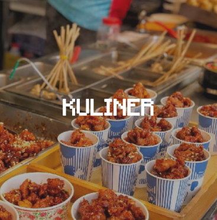
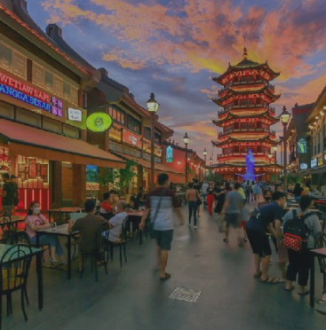
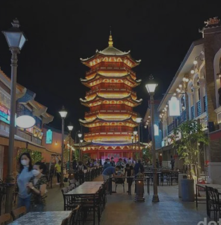

JAKARTA
Jakarta, secara resmi bernama Daerah Khusus Ibukota Jakarta atau DKI Jakarta,
sebelumnya dikenal sebagai Batavia, adalah ibu kota Indonesia dan sekaligus daerah otonom setingkat provinsi.
Jakarta memiliki lima kota administrasi dan satu kabupaten administrasi.
DKI Jakarta dapat digolongkan sebagai kota metropolitan, dan mendapat julukan The Big Durian karena dianggap sebanding dengan Kota New York (Big Apple) di Amerika Serikat.



Kuliner
Lihat